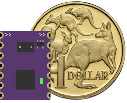
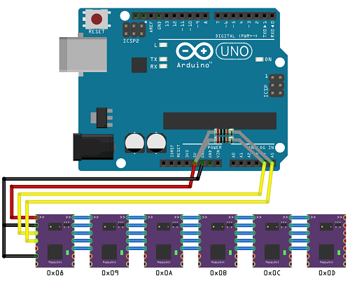

The Problem With Sensors
Any automated system that interacts with the environment needs sensors to allow them to know where they are and what they are doing. The market is filled with a variety of sensors that allow for the development of systems that can move, place, squish, vibrate, touch etc. However, these sensors can require complex development, large processing requirements and are difficult to calibrate and operate, especially when using many of them at once.
SensorDot Solution
SensorDots overcomes your sensor integration headaches by offering a suite of enhanced sensor modules that provide additional filtering processing, extremely fast polling rates, an easy to use I2C interface, crosstalk reduction and automatic bus addressing schemes, all in very a small package. These enhanced sensors provide a simple way for both hobbyists and systems designers to add an array of different measurement and environmental sensors to new or existing platforms. Each SensorDot is designed to offer the flexibility to be used straight away on a prototyping setup, then integrated into a final commercial product without any hardware or software redesign.
SensorDot footprint scale compared to an Australian $1 coin ($1AUD is the same size as a US Quarter).
Much More Than a Breakout!
The sensors are more than just an off the shelf breakout board. Each of the modules offer:
- Auto addressed bus scheme for chaining up to 112 different devices.
- A 2.8-5V signalling and operating voltage range which will work with your platform of choice.
- A simplified I2C interface for easy integration into new or existing projects with next to zero code and processing requirements.
- Reduced device initialisation and upkeep times. Many devices can now share the same bus with the fastest possible update rates. For example, you can poll 112 MappyDots, 50 times each, every second for a total of 5600 measurements per second (depending on your host processing speed).
- Inter-sensor crosstalk reduction and measurement synchronisation to reduce measurement errors.
- Real-time filtering to reduce background noise effects.
- Automatic mode switching to get optimal measurements depending on the environment.
- More advanced features for complex applications.
- In-service firmware upgradability via I2C. There’s no need to disconnect already deployed and integrated devices.
- Open source sensor firmware.
- Threshold controlled, PWM or interrupt output from an onboard GPIO pin for standalone or distributed applications.
- A tiny footprint - 13x17.8mm (0.51x0.70").
- An easy to solder standard 2.54mm (0.1") pinout that can be used for either soldering directly to production boards or to header pins or wires for prototyping and breadboarding.
- A user controllable LED (PWM, threshold, measurement or manual modes).
- Device naming for easy recognition.
- Precalibration for plug and play use, as well as auto user calibration.
All this is possible, without the need for any additional processing on your platform of choice.
Chaining together multiple MappyDots on a single bus is simple!
ARDUINO® and other Arduino brands and logos are Trademarks of Arduino AG.